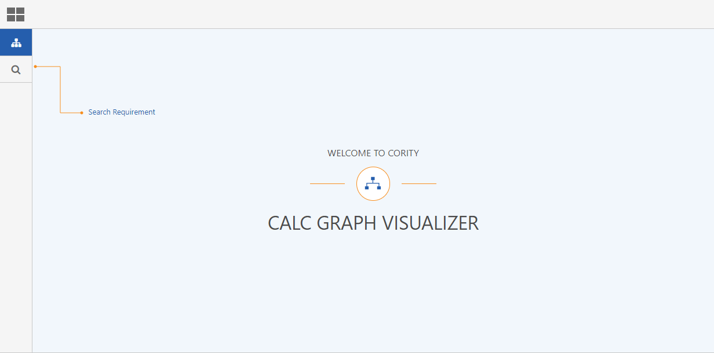
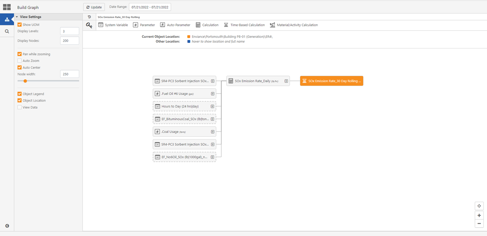
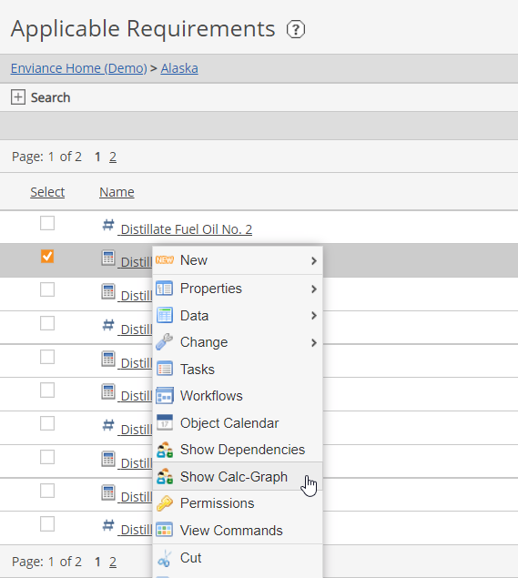
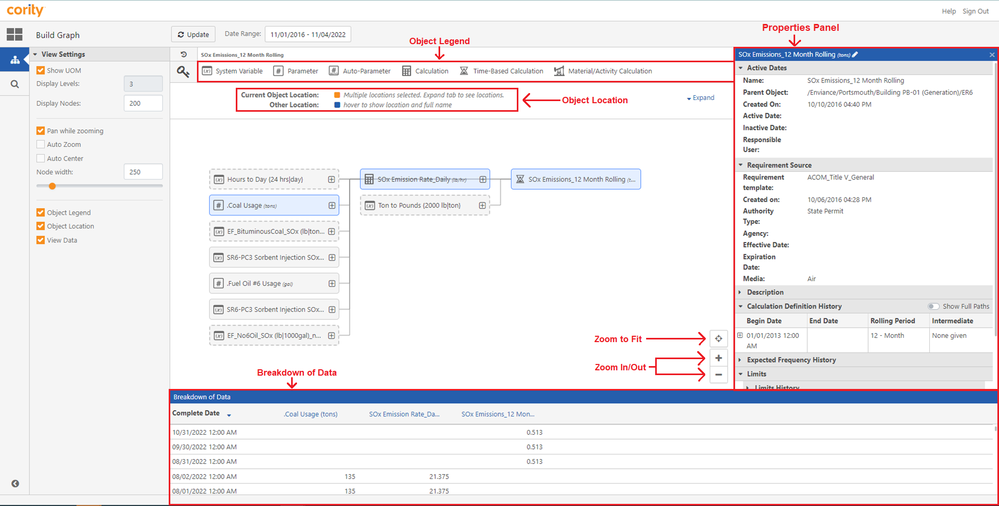

You can navigate to the Calc Graph Visualizer window (Build Graph screen) from the:



The Calc Graph Visualizer window will open, displaying the Build Graph screen for the selected requirement.
The Calc Graph Visualizer window (Build Graph screen) is made up of different areas to allow you to build calculations.

The Calc Graph Visualizer window (Build Graph screen) has the following controls:
If a calculation has more dependencies than the set number of nodes, a warning will appear. A full list of dependencies can be exported in .xlsx format.
Data in the Breakdown of Data section by default is displayed in descending data order. You can click the data column for the order to be changed to ascending order.
If the View Data checkbox is not selected, the Properties panel will automatically display on the right of the Calc Graph Visualizer window when a requirement is selected on the graph.